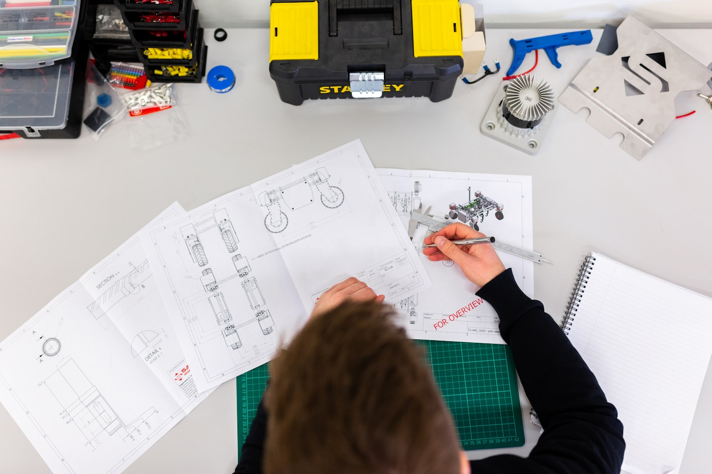

Short-term lift
Plain-language queries, accelerated reports, sharper RCA scaffolding, onboarding assistance, shrinking IT backlog for routine pulls.
MES stays the system of record. AI reduces friction extracting insight, shortening report cycles, and helping engineers spend less time in SQL - and more time improving the line.

If your organization already runs a mature MES, AI does not replace it - it amplifies it. Semiconductor and advanced manufacturing estates often carry years of customizations, interfaces, reports, and integrations - yet insight still waits on developers, SQL, and a few engineers who carry tribal context.
Modern models compress the friction between question and governed data paths: natural language sits on top of the same schemas and approvals your plant already trusts.
Report queues · SQL gateways · brittle tribal knowledge holding the topology in one or two heads.
Conversational probes · narrated deltas · drafts that route through the same escalation and audit habits you rely on.
Plain-language queries, accelerated reports, sharper RCA scaffolding, onboarding assistance, shrinking IT backlog for routine pulls.
Assisted engineering on SQL and interfaces, manufacturing insight narratives, conversational analytics with traceable evidence.
Proactive signals alongside human authority, richer cross-system context (ERP/SPC/supply chain), broadly accessible MES semantics.
MES remains the system of record; conversational requests route through definitions, permissions, and review patterns you stipulate - not anonymous SQL dumps.
Traditional: requirements → SQL → validation → deployment for many requests.
With AI assistance: ad hoc narratives, anomaly commentary, directional visual prompts - minutes instead of waterfalls, still subject to your release discipline.
Models correlate across excursions, rework, tooling, and history faster than heroic manual dives - surfacing hypotheses with pointers back to originating records.
MES estates naturally centralize brittle expertise - custom logic, dormant interfaces, handwritten glue. Assisted documentation and explanatory layers reduce single-person failure modes during turnover.
Operators answer more of their own exploratory questions inside guardrails - while IT invests in architecture, security, strategic automation, fewer ticket treadmills.
Faster prototyping of queries, APIs, integrations, troubleshooting of legacy scripts - all with reviewer gates appropriate to semiconductor compliance culture.
Result: shorter enhancement cycles without pretending unsupervised codegen belongs in unrestricted production.
Narratives around bottleneck risk, process drift hypotheses, abnormal tool behavior - paired with instrumentation so “the model suggested it” turns into reproducible telemetry.
Bridge ERP, SPC, quality, supply tooling where policy allows conversational orchestration - not a walled MES monoculture.
“Why did yield step down on line three overnight?”
Structured answers correlate relevant events - excursions, downtime, material shifts - explicitly distinguishing evidence from speculation.
Predictive nudges, preventive maintenance scaffolding, escalating risk pings - still owned by accountable humans on the operations chain of command.
Capacity, prioritization, and allocation storytelling that respects deterministic planning systems as authorities where required.
Broader conversational literacy across ops, engineering, executives - with lineage and permissioning treated as features, not afterthoughts.
MES toolchains differ - semiconductor vs discrete, regulatory overlays, data latency. We scope pilots against live instrumentation realities, not generic diagrams. Schedule a discovery call.